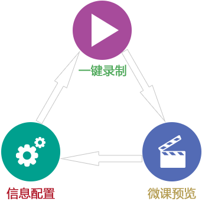

微课录制工具
- 界面简单，操作方便，支持热键操作；
- 自动生成索引并且可对索引进行编辑；
- 支持将课程打包SCORM标准课件。

专业录播平台
- 高效同步捕获屏幕与视频，一键录制，画面流畅；
- 多种多样的课程模版，可以根据课程内容课件风格随意选择更换；
- 视屏交互，根据需求选择重点观看内容；
- 支持索引自动生成与编辑，插入片头、片尾；
- 版权保护，课件支持加入水印Logo；
- 录制与直播双重功能，直播过程中可与学员互动交流。
全自动录播平台
- 实现全自动跟踪、录制、直播，录制跟踪稳定、流畅、无盲区；
- 记录讲师、课件、学员等所有音视频信号，同步、清晰且不失真；
- 两种模式（电影模式、分屏模式）单独或同时使用；120中画面切换特效。
- 可直播任意格式的电子资料，包括PPT文件，PDF文件，WORD文件，EXCEL文件，CAD文件、各种图片文件、各种视频文件等。